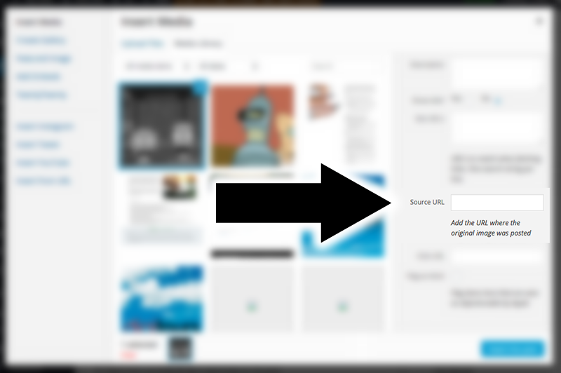

Photo credit added automatically to every photo with a caption
Crediting and linking the source of any republished photo or illustration on the web is one of the most important best practices of web publishing. Unfortunately, there isn’t a standard way of doing it in WordPress and authors are left with their own decision on how and where to credit the original author or website.
I decided to add a simple “Source URL” input field to every image that is uploaded. Adding credit with a link to the source of that image now becomes as easy as adding a title or caption for an image:
{kind=link}
Implementation
You need to add the following snippet of PHP to your theme’s functions.php:
Add the source URL input field to image upload screen
add_filter("attachment_fields_to_edit", "add_image_source_url", 10, 2);
function add_image_source_url($form_fields, $post) {
$form_fields["source_url"] = array(
"label" => __("Source URL"),
"input" => "text",
"value" => get_post_meta($post->ID, "source_url", true),
"helps" => __("Add the URL where the original image was posted"),
);
return $form_fields;
}
add_filter("attachment_fields_to_save", "save_image_source_url", 10 , 2);
function save_image_source_url($post, $attachment) {
if (isset($attachment['source_url']))
update_post_meta($post['ID'], 'source_url', esc_url($attachment['source_url']));
return $post;
}
Automatically append the source URL to image captions
add_filter('img_caption_shortcode', 'caption_shortcode_with_credits', 10, 3);
function caption_shortcode_with_credits($empty, $attr, $content) {
extract(shortcode_atts(array(
'id' => '',
'align' => 'alignnone',
'width' => '',
'caption' => ''
), $attr));
// Extract attachment $post->ID
preg_match('/\d+/', $id, $att_id);
if (is_numeric($att_id[0]) && $source_url = get_post_meta($att_id[0], 'source_url', true)) {
$parts = parse_url($source_url);
$caption .= ' ('. __('via') .' <a href="'. $source_url .'">'. $parts['host'] .'</a>)';
}
if (1 > (int) $width || empty($caption))
return $content;
if ($id)
$id = 'id="' . esc_attr($id) . '" ';
return '<div ' . $id . 'class="wp-caption ' . esc_attr($align) . '" style="width: ' . (10 + (int) $width) . 'px">'
. do_shortcode($content) . '<p class="wp-caption-text">' . $caption . '</p></div>';
}
Please note that the source URL will be visible only if you specify image caption upon inserting the image.
Thanks a ton for this code! One question – how can I append this to the caption for a post thumbnail?
Chris, this should work also with thumbnail captions. Or do you mean featured images? In that case you need to write some custom code (depending on the theme you’re using) to echo caption along with the featured image.
Nevermind, I’ve figured out how to do it. Thanks!
Would you mind sharing your solution, Chris? There might be others interested in doing something similar.
All you have to do is include the following inside your main WP loop, underneath your featured thumbnail…
If you aren’t using HTML5, then make sure to use something different than the <figcaption> tag, like a <div> or <span>.
Where’s the main WP loop that you are reference?
I am sure that Chris was referring the main
have_posts()whileloop inside yourindex.php,archive.phpandsingle.phptemplate files.I have tinkered with this a bit, and I am curious how one would make the name of the photo credit the link, rather than posting the link after caption text.
Brad, simply wrap the link around
$captioninstead of appending to it. Replace this:$caption .= ' ('. __('via') .' <a href="'. $source_url .'">'. $parts['host'] .'</a>)';with
This is awesome. I wish it worked on edit image window as well. Gonna try, if I find something, I’ll come back.
A plugin doing all the above would be very nice! I changed my theme, it uses featured images and I am worrying about cc issues. I think other people would also like it. The hack is very useful, but I do not want to keep in mind to update manually all the time I update my theme.
Hi,
I was wondering how i could do the same thing but for “Insert Image From URL” ?
Then shorten the url from http://www.google.com/image_link
to just: google.com (but linking to the image).
Ideas?
You should be able to add the credits after the image has been uploaded. This script adds the credits meta field to all image attachments.
Secondly, Google Images is never the source of the image and you should credit the original author which those search results link to.
Thanks very much, I have been using this method for quite some time now. However, it seems like I can’t change the link after the image has been uploaded and the article has been published. I want to update some links that don’t link correctly anymore but when I click the pencil icon on the image, the original link I used isn’t shown anywhere… I’m using the latest version of WP.
The credits URL is assigned to the attachment file so you can simply open the “Insert Image” dialog box, select the image and edit the “Source URL” field under the “Description” field, like so:

Great! Thank you!
I usually don’t write anything in the caption field. how does it work without writing anything in caption field. i don’t want to write caption actually. really appreciate your response
This specific implementation relies on the caption output to add the link. Images without captions are added as regular HTML tags with no dynamic fields. You could try adding an empty space as the caption (haven’t tested it though).
@Kaspar – this doesn’t work, the empty space will be deleted. also i think this is not a very good alernative. any idea how to always put the caption shortcode, even without content? i am fiddling since ours with your code … :-P
i have a solution for this, no regular caption needed: http://jsfiddle.net/herrfischerhamburg/6ya0mqfn/1/
Yes, this could work. However, this approach disables the WordPress core caption formatting/features which might cause some problems in the future when WP core changes.
yes, and this is why i ended up using only the core caption function, it’s too much black magic.
Thanks for this – it is only missing the link text for the URL provided, such as “Wikimedia Commons” as link text and “https://commons.wikimedia.org/” as URL to assign to a media file.